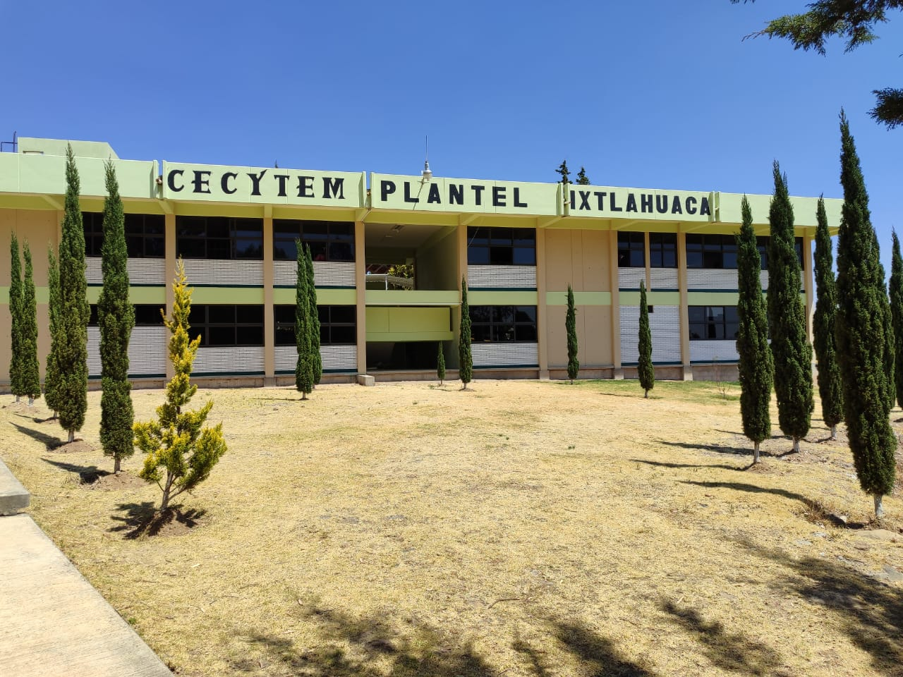
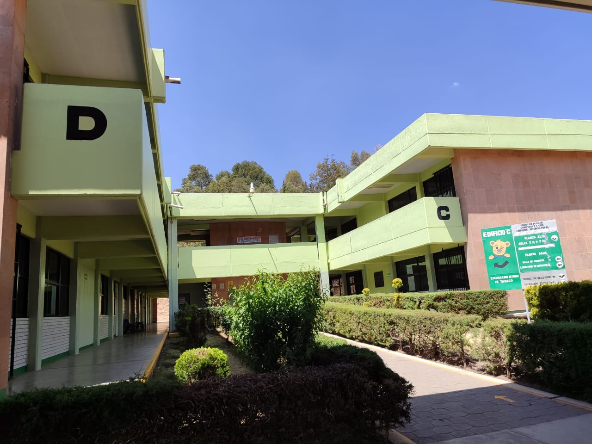

COLEGIO DE ESTUDIOS CIENTIFICOS Y TECNOLOGICOS DEL ESTADO DE MÉXICO.
PLANTEL IXTLAHUACA
Elaborado por:Cristopher Antonio Antonio.
Grupo: 404. Numero de Lista:3 Fecha de Elaboración: 12 de abril de 2024. Hora:08:01 a.m.
El Gobierno Federal, a través de la Secretaría de Educación Pública, y el Gobierno del Estado de México firmaron, el 15 de septiembre de 1994, un Convenio de Coordinación para la Creación, Operación y Apoyo Financiero del Colegio de Estudios Científicos y Tecnológicos del Estado de México (CECyTEM), a fin de contribuir a impulsar y consolidar los programas de educación media superior tecnológica en la entidad.
Derivado del Convenio, el Gobierno del Estado efectuó las acciones jurídicas necesarias para la creación del mencionado Colegio, por lo que la H. “LII” Legislatura del Estado emitió, mediante el decreto No. 48, la Ley que crea el Organismo Público Descentralizado de Carácter Estatal denominado Colegio de Estudios Científicos y Tecnológicos del Estado de México (CECyTEM), con personalidad jurídica y patrimonio propios. Este decreto se publicó en el periódico oficial “Gaceta del Gobierno“, el 19 de octubre de 1994.
El CECyTEM tiene por objeto impartir educación media superior terminal, terminal por convenio y bivalente de carácter tecnológico; promover un mejor aprovechamiento social de los recursos naturales y contribuir a su utilización racional; reforzar el proceso enseñanza-aprendizaje con actividades curriculares y extracurriculares debidamente planeadas y ejecutadas; promover y difundir la actitud crítica derivada de la verdad científica, la previsión y búsqueda del futuro con base en el objeto de nuestra realidad y valores nacionales, promover la cultura estatal, nacional y universal, especialmente la de carácter tecnológico; y, realizar programas de vinculación con los sectores público, privado y social que contribuyan a la consolidación del desarrollo tecnológico y social del ser humano.
Para el inicio de operaciones del CECyTEM, la Secretaría de Educación Pública y el Gobierno del Estado de México acordaron crear, en su primera etapa de crecimiento, cuatro planteles en los municipios de Valle de Chalco Solidaridad, Chimalhuacán, Ecatepec y Nicolás Romero.
Con base en lo anterior, la entonces Secretaría de Administración del Gobierno del Estado de México aprobó, en noviembre de 1994, la primera estructura de organización del CECyTEM, la cual se conformó por siete unidades administrativas (una dirección general, una contraloría interna, dos direcciones de área y tres departamentos). Asimismo, consideró en la estructura los cuatro planteles antes mencionados.
Cabe destacar que el crecimiento y consolidación de la estructura de organización del Colegio está directamente relacionado con el incremento de la matrícula escolar, las necesidades de educación media superior que demanden los municipios de la entidad, y la aportación presupuestal que asignen el Gobierno Federal y el Gobierno Estatal, al Colegio.
Por lo anterior, el CECyTEM modificó su estructura de organización en el mes de noviembre de 1995, a fin de incrementar de cuatro a nueve el número de planteles en operación. Los municipios que se beneficiaron con la creación de los cinco Planteles adicionales fueron: Cuautitlán Izcalli, La Paz, Toluca, Tecámac y Metepec.

La tercera modificación a la estructura de organización del CECyTEM fue en noviembre de 1996, por medio de la cual se incrementó de siete a diez unidades administrativas centrales (una dirección general, una contraloría interna, dos direcciones de área y seis departamentos), y de 9 a 17 planteles. Las unidades administrativas de nueva creación fueron los Departamentos de Control Escolar, de Recursos Materiales y de Planeación, siendo necesario, también, el cambio de denominación de la Dirección de Planeación, aprobada en 1994, por Dirección de Administración, toda vez que las funciones de planeación las asumiría el Departamento creado exprofeso.
Del mismo modo, los ocho planteles de nueva creación se establecieron en los municipios de Ixtlahuaca, Coatepec Harinas, Tenancingo, Chicoloapan, Coacalco, Ixtapaluca, Nezahualcóyotl y Tultitlán.
La cuarta modificación a la estructura de organización se llevó a cabo en noviembre de 1998, en la cual se incrementaron de 10 a 12 unidades administrativas: una Dirección General, una Contraloría Interna, dos Direcciones de Área y ocho Departamentos, al crearse los Departamentos de Informática y de Recursos Financieros.
Asimismo, se crearon cuatro planteles ubicados en los municipios de Zacazonapan, Aculco, Villa del Carbón y San Felipe del Progreso, por lo que el CECyTEM pasó de 17 a 21 planteles.
Posteriormente, en enero de 1999 se autorizó una estructura de organización que contempló las mismas unidades administrativas autorizadas en noviembre de 1998, pero que formalizó la existencia de cinco Planteles más en los municipios de Atlautla, Temascaltepec, Malinalco, Jilotepec y Xonacatlán. Por lo anterior, el Colegio tuvo a su cargo, hasta esa fecha, 26 planteles.
En junio de 2000, la entonces Secretaria de Administración autorizó al CECyTEM una estructura de organización, la cual se integró por 17 unidades administrativas (una dirección general, una unidad jurídica, una contraloría interna, cuatro direcciones de área y 10 departamentos); asimismo, se formalizo la creación de cinco Planteles más, los cuales fueron en los municipios de: Nezahualcóyotl II, Tenango del Valle, Tequixquiac, Villa Victoria y Ecatepec II, contando el Colegio con un total de 31 planteles.
En enero de 2002, se autorizó al organismo por parte de la Secretaría de Administración una nueva estructura de organización, en la cual se consideró las unidades administrativas autorizadas en junio de 2000, además, se formalizó la existencia de cuatro Planteles más en los municipios de Ixtapaluca, Jiquipilco, Sultepec y Tepotzotlán, por lo que el número de Planteles del organismo se incrementó a 35.
En noviembre de 2003 la entonces Secretaría de Finanzas, Planeación y Administración autorizó un Plantel más en el municipio de Tultepec, por lo que el Colegio pasó de 35 a 36 Planteles regionales y, en noviembre de 2004, autorizó dos Planteles más el de Nicolás Romero II y el de San Felipe del Progreso, sumando un total de 38 Planteles en el territorio estatal.
Derivado de la demanda cada vez más creciente de los servicios que oferta el Colegio, en enero de 2006 la Secretaría de Finanzas autorizó una nueva estructura de organización, la cual consistió en la creación de dos Planteles: el de Chalco y el de Valle de Chalco Solidaridad II, quedando conformada su estructura de organización por 17 unidades administrativas: una Dirección General, una Unidad Jurídica, una Contraloría Interna, cuatro Direcciones de Área y 10 Departamentos, así como por 40 Planteles regionales.
En julio de 2007 la Secretaría de Finanzas autorizó al CECyTEM una nueva estructura de organización, la cual consistió en la creación de un Plantel en el Municipio de Villa de Allende, por lo cual la estructura de esta Institución educativa quedó conformada por las mismas 17 unidades administrativas y por 41 Planteles.

Todos los derechos reservados, Elaborado por Christopher Antonio Antonio, Tel:7298978737, Email:antchris689@gmail.com, Pagina web.www.caratula.gob.mx, Domicilio desconocido.